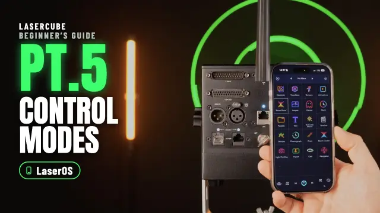
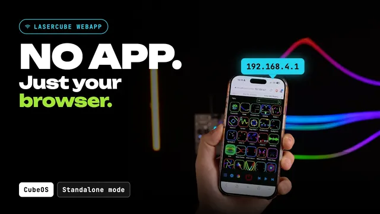
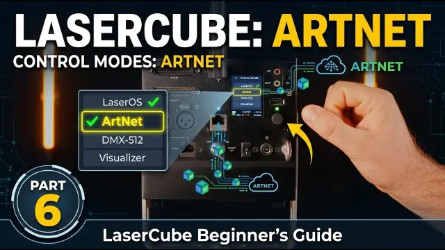

LaserCube Academy · Intermediate
Control modes for the Ultra MK2 and Pro
Eight short lessons on running your cube without a laptop, or from your lighting desk: your own playlists from the SD card, shows that follow the music, laser shows on several cubes at once, DMX and Art‑Net, and MIDI controllers. Pass the final quiz and download your certificate.
Course contents0 of 8 lessons done
The questions, the final quiz and the certificate need JavaScript. Without it you can still read every lesson below.
Before you start
How this course works
Streaming from LaserOS is only one way to run your cube. This course shows you the others: the cube playing on its own from its SD card, a lighting desk in charge, and knobs and buttons on a MIDI controller.
By the end you can
- pick the right control mode for a job, and know which settings the cube uses in it;
- put your own playlist on the SD card and play it from the cube’s screen or a web browser;
- make the Visualizer follow the music, from the built‑in microphone or the line input;
- play a built‑in laser show on several cubes in sync with Cube Link;
- connect a DMX or Art‑Net desk and read the cube’s 16 channels;
- use and map an APC40 MK2 or APC mini MK2 MIDI controller.
How the lessons work
- Each lesson takes about 5 minutes, plus any video. It has the key points and a few questions, and most have a video or pictures. Get a question wrong? Pick another answer.
- Your progress is saved in this browser. There’s no account and nothing is sent to us. Clearing your browser data, or switching to another device, starts the course again.
- When all eight lessons are done, take the final quiz: 10 questions, 8 right to pass, as many tries as you need.
- Pass, then download your certificate as a PDF or an image.
Every rule from the Start here course applies in every control mode: the beam block set before the show, every beam at least 3 m (10 ft) above people, every beam and where it lands in view of someone who can stop the laser, two ways to stop the laser within reach, only people trained in laser safety at the controls, and never leaving a running laser unattended. If you haven’t done that course yet, start there.
Sources: the LaserCube Ultra MK2 & Pro manual, and our video tutorials. If a video and the manual differ, follow the manual.
Completed
Lesson 1 of 8
Pick a control mode
The control mode decides who is in charge of the laser: software on a computer or phone, the cube itself, or a lighting desk. One mode is active at a time.

The eight control modes
The cube plays on its own, from its SD card. No computer needed.
- Playlist: plays playlists you made in LaserOS (lessons 2 and 3).
- Visualizer: 91 built‑in visuals that react to sound (lesson 4).
- Laser Show: ready‑made laser shows with music, on one cube or several (lesson 5).
A lighting desk is in charge
- DMX: a DMX desk or controller, over a DMX cable (lessons 6 and 7).
- Art‑Net: the same control over the network, from desks and software that speak Art‑Net.
Software streams to the cube over the network
- LaserOS: LaserOS is in complete control, as in the Start here course. It’s also the mode for supported third‑party apps such as Liberation, LaserShowGen, MadMapper and TouchDesigner.
- IDN: the ILDA Digital Network protocol, streaming up to 35,000 points per second.
- Ether Dream: the Ether Dream network protocol, for third‑party laser software.
ILDA input: other show software can send its signal through its own interface box (a DAC) into the ILDA input, the standard laser show connector. The cube switches to it by itself, overriding the current mode. The manual suggests 30,000 points per second in that software, and raising In Mute under Settings → ILDA Input Cfg if a faint beam stays on.
Change the mode
- On the cube’s screen, choose Control Mode in the main menu, then the mode. Turn the knob to move, push it to select.
- When you choose DMX or Art‑Net, the cube restarts in that mode, and its DMX or ArtNet menu appears in the main menu.
- The status bar at the bottom of the screen shows the current mode, the connection and the cube’s IP address, plus an I‑LOCK warning while the interlock is open.
- Its background colour tells you more: green while the cube receives laser data over the network, cyan while the ILDA input is in use, and purple on a Cube Link slave that has found its master (lesson 5).

Which settings the cube uses
- In LaserOS mode, LaserOS handles the image setup, colour balance and safety zones, so those entries are greyed out on the cube.
- When you choose one of the cube’s other modes, such as Visualizer, the cube’s own settings become available under Settings → Projection: Image Setup (power, rotation, size, flip and position), Colour Balance and Safety Zone. Set the safety zone there, as in Start here, lesson 8.
In Playlist mode, the last playlist starts as soon as the interlock is enabled, because Power‑On Play is on by default. Effect settings you change on the cube are kept after a power cycle. So once the key is on and the interlock is ready (on US cubes, after the E‑Stop start), the show may start straight away.
Before you start: update the firmware
- This course follows the manual, which describes firmware 2.0 (for example its 91 visualizers).
- The manual’s preferred way to update is the SD card: when the card has newer firmware, the cube asks whether to update. LaserOS also offers updates. The latest card contents on GitHub (lesson 2) include the newest firmware.

Check yourself
In the manual: Control modes·CubeOS screen and status bar·Projection settings·Firmware update
Lesson complete. On to lesson 2.
Completed
Lesson 2 of 8
Build a playlist in LaserOS
Playlist mode plays the content you choose, straight from the SD card. You build the playlist in LaserOS on a computer, then copy it to the card.

The SD card
- The microSD card in the cube holds the content for the stand‑alone modes, DMX, Art‑Net and MIDI: the built‑in laser shows, demo playlists and MIDI mappings come on it.
- Missing files? The latest card contents, including the newest firmware, are on GitHub. Unzip them and copy the “Lasercube” folder to the root of the card. Deleting the old folder also deletes your own playlists and MIDI mappings.
- Need a new card? The one the manual names as tested is the Lexar A2 Silver Plus 64GB. Cheaper cards may fail to stream the laser shows. If you format it, use exFAT, and name the card “WL”.
Make the playlist
- Use LaserOS 0.18.1 or later on a Windows or Mac computer. The phone and tablet apps only stream to the cube: they can’t put content on its SD card.
- Open the Playlists app, click the small + and save the new playlist. Keep the name short: the cube’s screen can only show a limited number of characters.
- Add content: drag cues (each item in LaserOS, such as an animation, is a cue) into the playlist pane on the right, or right‑click any cue, pick your playlist under “Add To Playlist” and click Add.
Add your own logo
- Open the Import app, pick the playlist, then click “Import files”. SVG and ILD files give the best results. A PNG or JPG is first turned into lines, in a window where you adjust sensitivity, line length and more, with a live preview.
- A very detailed image can flicker: the scanners can only draw so many points per second. Turn on “Show FPS” in LaserOS (Settings → General). At 45 frames per second or more, it won’t appear to flicker.
- If it flickers, lower its render quality: right‑click the item in the playlist, turn on “Assign render quality” and move the slider down.
How long each item plays
Right‑click an item and turn on “Assign Duration”. Choose time (1 to 999 seconds) or cycles (how many times an animation plays, 1 to 999). One cycle suits scrolling text from the Text app: it scrolls once, then the next item plays. The “Beats” duration and “Assign Effect” aren’t supported on the cube.
Copy it to the SD card
- Put the cube’s microSD card in a USB 3.x card reader and connect it to the computer. It shows up as a drive called WL, with a folder called “Lasercube”.
- In the Playlists app, select the playlist and click the SD card export button. If the computer asks for access to the card, allow it. If the playlist is already on the card, you can replace it.
- “SD card not found”? Check that the card is properly in the reader, that it’s named WL (rename it if not) and that it has the Lasercube folder (if not, get the card contents from GitHub, above).
- On the card, each playlist is a “.ldpl” file plus a folder with the same name. The cube only lists the playlist if both are there. The .ldpl file is plain text, and its order is the play order (with shuffle off).
- Eject the card safely before you take it out. Put it back in the cube, then switch the cube on.
Check yourself
Put the steps for a new playlist in order.
- Make and save a playlist in LaserOS on a computer
- Add cues and import your logo
- Export it to the SD card, in a USB 3.x reader
- Eject the card safely
- Put the card back in the cube and switch it on
Build the playlist first, export it to the card on the computer, and eject the card safely before it goes back in the cube.
In the manual: Creating a playlist·Adding your own SVG·Exporting to the SD card·SD card
Lesson complete. On to lesson 3.
Completed
Lesson 3 of 8
Play it on the cube
Now play your playlist: from the cube’s own screen, or from a web browser on your phone or laptop.
The Playlist Player
- With the card in the cube, choose Control Mode → Playlist, open the Playlist Player and pick your playlist. The cube remembers it after a power cycle.
- Auto‑Play moves on to the next cue every “cue delay” seconds. Press pause to stay on the current cue.
- Picking a cue yourself, with previous or next, the web app or an APC button, stops the auto‑play until you press play again.
- Shuffle plays the cues in random order. Settings → Playback Speed changes how fast each cue’s animation runs.

Playlist options
The Playlist Options menu sits below the Playlist Player in the main menu.
- Fade: how fast one item fades out and the next fades in. The default is 250 ms; 0 ms means no fade.
- Power‑On Play: on by default. The last playlist starts projecting as soon as the interlock is enabled after switching on. Set it to Disabled if you want the cube to wait until you press the projection button in the player or the web app.
- Web html: the factory web app, or your own version of it from the SD card.
Control it from a browser

- Connect your phone or laptop to the cube, the same way as for LaserOS. With WiFi server, join the cube’s WiFi: “LaserCube”, password “Laser2020”, unless you changed them.
- Open a web browser (the manual names Safari and Firefox) and type the cube’s IP address: 192.168.4.1 by default on WiFi server. It’s also shown at the bottom right of the status bar.
- Pick a playlist at the top right, and tap a cue to play it.
- Quick image settings: rotation (up to 90° either way), zoom (10 to 100%) and power (0 to 100%).
- Quick player settings: shuffle, cue delay and play speed (100 is normal speed). At the bottom it shows the interlock status, the battery and the cube’s temperature.
- Quick effects: one image effect and one colour effect at a time (lesson 4).

Check yourself
In the manual: Playlist Player·Playlist options·Playlist web app
Lesson complete. On to lesson 4.
Completed
Lesson 4 of 8
Visualizer: shows that follow the music
In Visualizer mode the cube draws its own visuals that react to sound. There’s no playlist to build and no computer to connect.
Pick a visual
- Firmware 2.0 has 91 sound‑reactive visualizers: spectrum and waveform meters, particles and trails, geometric patterns, beams and mirrors, and a few characters, such as a dancing stick figure. The manual lists them all, with a picture of each.
- Choose Control Mode → Visualizer. Pick a playlist (“All” has every visual), then a visual, or let auto‑play move through the list. Picking a visual yourself, or pressing previous or next, cancels the auto‑play.
- The Viz Options menu sets the transition time between visuals. Auto‑play at power‑on can be set too.

Give it sound
- Settings → Audio → Audio Input: the built‑in microphone, or the line input. For the line input, plug the audio from a computer or another audio device into the pink 3.5 mm jack marked A‑IN.
- Gain (Max Line Gain or Max Mic Gain, 0 to 50 dB in 5 dB steps): too low and some visuals hardly move; too high and they’re overdriven.
- Settings → Tempo: some visuals and effects follow the tempo. Press “Tap BPM” in time with the music so the cube works out its beats per minute, then press “Sync Beat” on the first beat of a bar.
Effects
- In Playlist and Visualizer modes, the Effects menu adds effects that warp or re‑colour the image: zooms, 3D spins, ripples, colour cycles, strobes and more, 78 in all. Most react to the sound or the tempo.
- Effects only work once they’re enabled. The manual recommends keeping them disabled when you don’t need them, so the projection doesn’t change by accident.
- The Master Effect slider sets how strongly all effects apply: 100% by default; at 0% no effect is applied.
- Effect settings you change on the cube are kept after a power cycle.
- In the web apps’ quick effect menu, you pick one image effect and one colour effect at a time; “No Effect” turns one off.
The Visualizer web app
Visualizer mode has its own web app, opened like the playlist one. In it you pick playlists and make your own: long‑press a visual to add it to a playlist, and hold and drag to change the order. The built‑in “All” and “Classics” playlists can’t be deleted. If the previews show as blank squares, update the SD card from GitHub (lesson 2).
Check yourself
In the manual: Visualizer mode·Audio settings·Tempo·Effects·Visualizer web app
Lesson complete. On to lesson 5.
Completed
Lesson 5 of 8
Laser shows on one cube or several
Laser Show mode plays ready‑made shows with music, from the SD card. With Cube Link, several cubes play them in sync, with no computer and no WiFi network.
Play a built‑in show
- Choose Control Mode → Laser Show, pick a category, then press play. There are 38 shows in 7 categories: EDM, Christmas, Thanksgiving, New Year, Birthday, Wedding and Halloween. When a show ends, the next one in the category starts.
- Empty list? The SD card is missing, or it doesn’t have the factory contents (lesson 2).
- The music comes out of the green 3.5 mm jack marked A‑OUT: connect powered speakers. Settings → Audio → Audio Output Volume sets the level.
- Some speakers with built‑in light effects delay the sound, by as much as 300 ms. Then use Audio Output Delay to bring the music and the laser back in sync. A new delay applies when you stop and start the show again.
Several cubes with Cube Link

- Cube Link makes its own wireless link between the cubes, over about 20 to 40 m with a clear line of sight. Connect the WiFi antenna on every cube first.
- It’s under Settings → Network → Cube Link, and it’s only available when the connection mode isn’t WiFi. If it is, choose a LAN mode under Settings → Connection first (on firmware older than 2.1, the cube restarts).
- On every cube, choose Laser Show mode, enable Cube Link and set the same Link Channel and the same PIN. For the PIN, highlight the PIN box and short‑press to open it; turn the knob to change the highlighted digit, short‑press to move to another digit, and long‑press to close it.
- Make one cube the Master and all the others Slaves.
- Set each cube’s Group. A show made for two projectors, such as Alive (2CH), has two parts: Group 1 cubes play one, Group 2 cubes the other. With four cubes, put two in each group.
- Pick the same show category on every cube. Pressing play on the master then starts them all.
- A slave that has found its master shows a purple status bar. Status Info shows how many slaves are connected (“Remote Slaves”).
Pressing play on the master starts lasers that may be 20 to 40 m away. Each cube has its own key and interlock. On every cube: its beam block set (Start here, lesson 8), and every beam and where it lands in view of someone who can get that laser stopped at once (lesson 4).


Other tips for several cubes
- In the cube’s own modes, such as Laser Show, you can fine‑tune each cube’s colours in Settings → Projection → Colour Balance, to match several projectors. The defaults suit most situations. In LaserOS mode, LaserOS handles colour balance.
- To stream to several cubes from LaserOS, or where WiFi is busy, the manual recommends network cables in LAN client mode (Start here, lesson 7).
Check yourself
Put the Cube Link set‑up in order.
- Connect the WiFi antenna on every cube
- Set a LAN connection, then enable Cube Link on every cube
- Set one Master and the rest Slaves, all on the same channel and PIN
- Check that every slave’s status bar turns purple
- Press play on the master
Antennas first, then a LAN connection and Cube Link on each cube, then one master and the slaves, all on the same channel and PIN. Once every slave shows purple, play on the master starts them all.
In the manual: Laser Show mode·Multi‑projector shows·Cube Link·Audio settings
Lesson complete. On to lesson 6.
Completed
Lesson 6 of 8
Connect a DMX or Art‑Net desk
With DMX or Art‑Net, a lighting desk runs the cube alongside your other lights. The cube plays cues from a playlist on its SD card; the desk picks the cue and can change its size, position, colour and more.

DMX or Art‑Net?
- DMX: a DMX cable from the desk or controller into the cube’s DMX In.
- Art‑Net: the same control over the network (Ethernet), from desks and software that speak Art‑Net. Connect a network cable and choose the connection under Settings → Connection, for example LAN client (Start here, lesson 7).
Who runs the laser: whoever runs the desk is running a Class 4 laser. The manual says only people trained in laser safety may operate it, and Start here’s rules still apply: every beam in view of someone who can stop the laser, and two ways to stop it, tested before the show.

DMX cables
- Ultra MK2: full‑size XLR DMX In and Out. Standard DMX cables plug straight in.
- Pro: DMX In and Out are two 3.5 mm TRS jacks (headphone‑size sockets), In on the left and Out on the right. Each needs an adapter cable, not included: for DMX In a 3.5 mm TRS plug to 3‑pin XLR male (the end with pins), for DMX Out a 3.5 mm TRS plug to 3‑pin XLR female (the end with holes).
- Both Pro cables are wired tip to XLR pin 3, ring to pin 2, sleeve to pin 1. Ordinary 3.5 mm‑to‑XLR audio cables are wired the other way round, so they won’t work. The manual names Eurolite’s “DMX‑Adapter IN Jack 3,5/XLR” and “DMX‑Adapter OUT Jack 3,5/XLR”.
Set it up on the cube
- Choose Control Mode → DMX‑512 (or ArtNet). The cube restarts, and the DMX (or ArtNet) menu is now in the main menu.
- Start Address: where the cube’s 16 channels begin, from 1 to 512 (default 1). Set the same address for the cube on your desk.
- Universe (Art‑Net only): the Art‑Net universe, a numbered set of 512 channels on the network, that the cube listens to.
- Fixture Profile: decides which channel controls which feature. There’s one, with 16 channels (lesson 7; the channel map is also a PDF on the factory SD card). It’s compatible with the FB3/FB4 16‑channel profile, so desks that support FB3/FB4 should work with it.
- CUE Selection: the playlist on the SD card that the desk picks cues from. Cue 1 is the playlist’s first item. Export your own from LaserOS (lesson 2) or use one that came on the card.
- Defaults puts every item in the menu back to its factory setting.


Is it receiving?
- At the bottom right of the status bar, a green tick next to DMX means the cube is receiving; a red cross means it isn’t.
- DMX red cross with the desk running: check the cabling, and that the DMX line is correctly terminated.
- Art‑Net red cross: check the network first (is an IP address shown in the status bar?), then that the cube is on the right universe.
- MIDI controllers don’t work in DMX or Art‑Net mode (lesson 8).
Check yourself
In the manual: DMX mode·DMX cables for the Pro·Art‑Net mode
Lesson complete. On to lesson 7.
Completed
Lesson 7 of 8
The 16 DMX channels
The cube uses 16 channels, starting at its start address. The same channels work over DMX and Art‑Net. Channel 1 decides how many of them the cube listens to.
Channel 1: access mode
| Value | Mode | Channels used |
|---|---|---|
| 0–31 | Blackout | none |
| 33–95 | Basic | 1–4 |
| 97–159 | Standard | 1–8 |
| 161–223 | Extended | 1–12 |
| 225–255 | Full | all 16 |
Channels above the mode’s range keep their default values. The values 32, 96, 160 and 224 don’t change the mode.
Picking a cue: channels 2 and 3
- Channel 3, cue: picks one of 48 cues. 0–31 is blackout, 33–35 is cue 1, 37–39 is cue 2, and so on up to 221–223 for cue 48.
- Channel 2, page: moves on in steps of 48 cues. 0–15 is page 1 (cues 1–48), 17–31 is page 2 (cues 49–96), and so on up to page 9 (129–255). That’s up to 432 cues in a playlist.
- Example: cue 50 of your playlist is page 2 (channel 2 at 17–31), cue 2 on that page (channel 3 at 37–39).
A first test
Send channel 1 at 33–95 (Basic), channel 2 at 0–15 (page 1), channel 3 at 33–35 (cue 1) and channel 4 at 0–15 (normal speed). The cube plays the first item of the CUE Selection playlist, at full brightness and full size (in Basic, channels 5 and 6 stay at 100%). With every channel at 0, it shows nothing: channel 1 at 0 is blackout.
The other channels
- 4, Speed: 0–15 normal speed; 17–31 pause; 33 to 255 runs from 25% to 200% (128 is 100%).
- 5, Fader (Standard and up): black to full brightness.
- 6, Scale (Standard and up): zero to full size.
- 7 and 8, X size and Y size (Standard and up): 128 is zero size, 255 full size, and 0 full size mirrored (X) or flipped upside down (Y).
- 9, Rotation (Extended and up): 0 to 360°.
- 10 and 11, X and Y position (Extended and up): 128 is the centre.
- 13, Scan rate (Full only): 0–31 the default, 35K points per second; 33–223 from 6K to 29K; 225–255 30K.
- 15, Recolour (Full only): 0–31 the cue’s own colours; 33–223 one colour, from red through the rainbow back to red; 225–255 white.
- 12, 14 and 16: reserved, not used yet.
Below the mode a channel needs, the cube uses that channel’s default: fader and scale at 100%, no rotation, the image centred, the default scan rate and no recolouring.
Safety: channels 6 to 11 let the desk resize, flip, rotate and move the image. Whatever the desk sends, the beam block is your hard stop: set and check it before the show, as in Start here, lesson 8.
Check yourself
In the manual: Default fixture channels·Channel layout
Lesson complete. On to lesson 8.
Completed
Lesson 8 of 8
MIDI controllers
Plug an APC40 MK2 or APC mini MK2 into the cube’s USB port, and you get real buttons, knobs and faders for cues, effects and settings. No computer in between.

Connect it
- Plug the APC40 MK2 or APC mini MK2 into the USB port, then turn on Settings → USB MIDI. A green tick next to MIDI in the status bar means it’s connected.
- MIDI works in Playlist, Visualizer and Laser Show modes. It doesn’t work in LaserOS, Art‑Net, DMX, IDN or Ether Dream mode: those are controlled another way.
- To save your mappings, an SD card must be in the cube. They’re stored in its /Lasercube/settings folder, one file for each controller and control mode, as plain text you can also edit.
The ready‑made mapping
- The SD card that comes with the cube has ready‑made mappings for the APC40 MK2 and the APC mini MK2. In the APC40 MK2 one, the blue items work in Playlist mode, the red ones are effects (Playlist and Visualizer modes), and the yellow ones are image settings for the whole cube, such as power, rotation, zoom and position. The tempo buttons are mapped too. The Master fader is the master effect intensity: no effect shows until it’s above 0%.
- In Playlist mode, the playlist’s items are put on the APC’s grid buttons by themselves. To choose the button and colour for each item, edit the playlist’s .ldpl file (the manual explains the apc_note and apc_color fields).
![The default APC40 MK2 mapping, from the manual. In blue: the grid of buttons selects cues from the current playlist, the scene buttons select the playlist, Play stops and starts the playlist, and one dial sets the cue speed. In red: the top dials set the speed or colour of the colour cycle, zoom, hue, colorize, flash and strobe effects, and the faders below set each effect’s intensity, plus a master effect intensity. Metronome is Sync Beat, Tap Tempo and the tempo dial set the tempo. In yellow: dials for power, rotation, zoom, X position and Y position.](../../docs/guides/ultra-mk2-pro-manual/Pictures/web/100000000000047F000002CAD2A81B96-1151.webp)
Map your own controls
- A slider to a knob or fader: on the cube’s screen, push the knob on the slider to edit it, then long‑press for the menu and choose “Link MIDI Knob”. Then move the control on the APC.
- If that control is already mapped to something else, its MIDI info shows orange. Accept it, and it moves to this slider.
- A mapped slider shows yellow on the screen instead of blue. Almost every slider can be mapped.
- APC40 faders are absolute: moving one always overrides the slider’s value. The dials turn without end stops, and the LED ring around each mapped dial shows the slider’s value.
- Buttons, switches and drop‑down lists (such as the playlist or the laser show list): highlight it (in a list, pick the item first), long‑press, choose “Link MIDI Note”, press a button on the APC and pick its light colour, one of 15.
- To remove a mapping, open the same menu and choose Unlink.
Safety: with the factory mapping, the yellow dials change the power, rotation, zoom and position of the image while it plays. Whatever the controller sends, the beam block is your hard stop (Start here, lesson 8).
Check yourself
In the manual: USB MIDI settings·MIDI mapping·Default APC40 MK2 mapping·Editing the playlist file
Lesson complete. Next: the final quiz.
Final quiz
Final quiz
10 questions picked at random, one from each of the course’s 10 topics. Get 8 right to pass. You can try as many times as you like.
Finish all eight lessons first. Still to do:
Certificate
Your certificate
Pass the final quiz to get your certificate. Go to the final quiz
Well done. Type your name as you want it on the certificate.
Your certificate is made right here in your browser. Your name isn’t sent anywhere; it’s only kept in this browser.

Download not starting? Press and hold the certificate (on a computer, right-click it) and save the image.
This is a certificate of completion. It is not a licence, a Laser Safety Officer (LSO) qualification or permission to run public laser shows. Every rule from Start here’s pre‑show checklist applies in every control mode.
Next course: Connect, update and troubleshoot your Ultra MK2 or Pro, to get connected, keep the firmware up to date and sort out common problems.